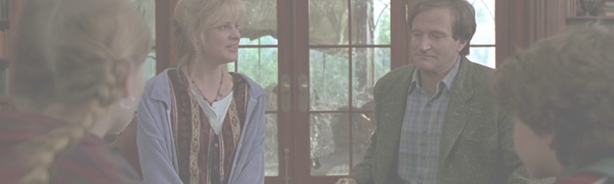

作品情報
-イントロダクション-
-ストーリー-
レビュー
ボードゲームで遊んでいるとサイコロの出た目に止まったメッセージ通りの不思議なことが巻き起こる。 子供にウケが良さそうで大人も楽しめる内容のため、家族連れで映画館で観るのに最適。ビックリ箱のような映画。
夢中になって何も考えずに見れる映画です。 エンターテイメントとして、映画として、本当に優れたものだと思います。
作品のアイデアとしてはすごい良かったと思う。わかりやすくてシンプルで、ちゃんと落として欲しいところに落ちて、誰とでも安心して楽しめる映画。